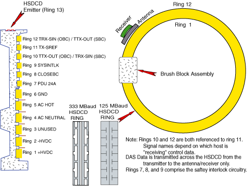
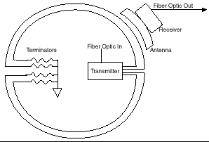
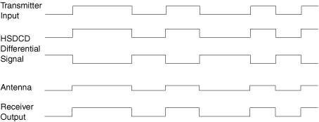
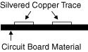
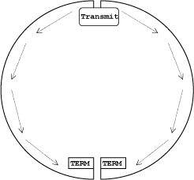

Operating Documentation
Direction 5114045-800, Rev# 10
LightSpeed 4.X Service Information (Advanced)
Operating Documentation |
Illustration 1: High Speed Data Capacitive Device (HSDCD) Slip Ring Architecture

Illustration 2: HSDCD Slip Ring Communications

DAS data received by the transmitter is converted into HSDCD (High Speed Data Capacitive Device) differential signalling. The transmitter converts its input to differential signals on the ring itself. The antenna is capacitively coupled to the ring and passes the differential signal to the receiver. The receiver converts and amplifies the differential signal to the original transmitter data input format.
Illustration 3: HSDCD Modulation

Serial Taxi DAS Data is transmitted at a rate of 850 MBaud. Each bit cell is 1.2 nanoseconds wide. Each word consists of 16 bits within 20 bit encoding, so each word cell is 24 nanoseconds wide.
The function of the transmitter is to take DAS data from its fiber-optic input port and send this signal out on transmitting antenna structure.
The HSDCD section of the slip ring is actually made up of a circuit board material that has two traces that run its entire circumference to carry the differential signal. This is called the emitter. It also has a ground plane underneath. The dimensions of the board are controlled to maintain a low trace impedance. This cross sectional shows its construction.
Illustration 4: HSDCD Ring

At the end of each strip, opposite the end fed by the transmitter, each trace is terminated with a 16 ohm surface mount resistor to the ground plane. Each board strip feeds one half of the ring with the HSDCD signal.
Illustration 5: HSDCD Ring Termination

The purpose of the HSDCD antenna is to pick up the differential signal from the traces on the ring. The pickup face of the antenna, which is positioned 1.41 mm (0.60 inches) height (use alignment tool 2245483) away from the ring traces, has two traces the same width and spacing as the traces on the ring, and each one acts like one plate of a capacitor. Hence, the signals are capacitive coupled from the ring to the antenna.
The purpose of the HSDCD receiver is to amplify the transmitted data signal from the HSDCD antenna to a usable level and convert it back into fiber-optic DAS taxi data.
Errors are caused by any noise that enters the HSDCD system within its pass band. Communication error rates are measured by how many errors occur in N number of bits. This is called the Bit Error Rate (BERR). The HSDCD system has been designed to produce 0 or 1 bad bits in 10E12 bits. Note that this is exclusive of forward error correction that enhances BERR to 0 or 1 errors in 10E14 bits. Under normal system operation, this would translate into one scan abort in five years due to DAS data channel errors. The system BERR performance can be monitored through the Dip Stats selection under the service menu. This tells you:
When the DipStats file was created or reset to zero
When the stats were last updated (end of last exam)
How many data bytes were transmitted since file creation (or reset)
How many offset bytes were transmitted since file creation (or reset)
How many taxi violations occurred since file creation (or reset)
How many successful forward error corrections (FEC) occurred since file creation (or reset)
How many scan aborts (unsuccessful FEC) occurred since file creation (or reset)
BERR can be calculated by the following:
E Number of Errors = Number of Scan Aborts
NO Number of offset bits = Number of offset bytes X 10
ND Number of Data bits = Number of data bytes X10
BERR = E / (NO + ND)
The transmitter has two LEDs. The green LED is on for power and the yellow is on for data. The yellow data LED is normally on in both system idle or active data collection.
The receiver has two LEDs. The green LED is on for power and the yellow is on for data. The yellow data LED is normally on in both system idle or active data collection.
The HSDCD antenna has no indicators.
Each individual brush has an arrow stamped into one side of the tip material. Brushes should be replaced when worn to the tip of the arrow.